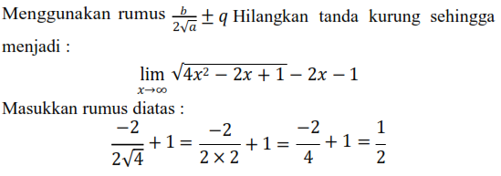

- Limit Tak Hingga-
Limit ketika x $\to$ $\infty$ misalkan f terdefinisi pada [$\alpha$, $\infty$) untuk beberapa bilangan $\alpha$. Dikatakan $\lim_{x\to \infty}$ f(x) = L jika untuk setiap s > 0 ada bilangan M sedemikian sehingga jika x > maka M |ƒ(x) − L| $\lt$ s.
Limit ketika x → −∞, misalkan f terdefinisi pada (−∞, $\alpha$] untuk beberapa bilangan $\alpha$. Dikatakan $\lim_{x\to -\infty}$ ƒ(x) = L jika untuk setiap s > 0 ada bilangan M sedemikian sehingga jika x $\lt$ M maka |ƒ(x) − L| $\lt$ s.
Limit suatu barisan misalkan terdefinisi untuk semua bilangan asli lebih dari atau sama dengan beberapa bilangan $s_n$. Dikatakan bahwa $\lim_{n\to \infty}$ $s_n$ = L jika untuk setiap s > 0 ada bilangan asli M sedemikian sehingga jika n > M maka |$s_n$ − L| $\lt$ s.
Dikatakan bahwa $\lim_{n\to \alpha^+}$ ƒ(x) = ∞ untuk setiap bilangan positif M ada $\delta$ > 0 sedemikian sehingga jika 0 $\lt$ x − $\alpha$ $\lt$ $\delta$ maka ƒ(x) > M. Misalkan diberikan fungsi ƒ(x) = $\frac{1}{x-1}$ maka nilai fungsi f(x) menuju tak hingga (∞) untuk x mendekati 1 dari kanan, sedangkan menuju minus tak hingga (−∞) untuk x mendekati 1 dari kiri. Pengertian tersebut dapat dinotasikan dengan limit sebagai berikut: $\lim_{n\to 1^+} ƒ(x)$ = ∞ dan $\lim_{n\to 1^-} ƒ(x)$ = -∞
Bila f(x) = $\frac{1}{(x-1)^2}$ maka didapatkan $\lim_{n\to 1^+} ƒ(x)$ = ∞ dan $\lim_{n\to 1^-} ƒ(x)$ = -∞. Bentuk limit tersebut dinamakan limit tak hingga, yaitu nilai fungs f(x) untuk x mendekati 1 sama dengan tak hingga (∞).
Sedangkan bentuk limit di titik mendekati tak hingga diilustrasikan sebagai berikut misal diberikan fungsi ƒ(x) = $\frac{1}{x}$ maka nilai fungsi akan mendekati nol bila x menuju tak hingga atau minus tak hingga, dinotasikan: $\lim_{n\to ∞} ƒ(x)$ = 0 dan $\lim_{n\to -∞} ƒ(x)$ = 0.
Secara umum, limit fungsi dari ƒ(x) = $\frac{1}{x^n}$, n $\in$ $B^+$ untuk x mendekati tak hingga atau minus tak hingga sama dengan nol, dituliskan: $\lim_{n\to ∞} ƒ(x)$ = 0 dan $\lim_{n\to -∞} ƒ(x)$ = 0.
Bila f(x) merupakan fungsi rasional, misal ƒ(x) = $\frac{p(x)}{q(x)}$ dengan p(x) dan q(x) merupakan polinom maka untuk menyelesaikan limit di tak hingga dilakukan dengan membagi pembilang p(x) dengan penyebut q(x) dengan x pangkat tertinggi yang terjadi.
B. CONTOH SOAL
-
Tunjukkan bahwa jika k adalah bilangan bulat positif, maka $\lim_{n\to ∞} \frac{1}{x^k}$ = 0.
Bukti:
Diberikan s > 0, akan ditemukan bilangan $M$ sedemikian sehingga jika x > $M$ maka $|\frac{1}{x^k} - 0| \lt s$.
Perhatikan bahwa:
$|\frac{1}{x^k} - 0| \lt s$
$|\frac{1}{x^k}| \lt s$
Misalkan $M$ > 0, akibatnya $x$ > 0 sehingga:
$\frac{1}{x^k} \lt s$
$x^k \gt \frac{1}{s}$
$x \gt \sqrt[k]{\frac{1}{s}}$
sehingga akan dipilih $M$ = $\sqrt[k]{\frac{1}{s}}$ sedemikian sehingga jika x > M
maka:
$\left| \frac{1}{x^{k}} -0 \right| = \frac{1}{x^{k}} \lt \frac{1}{M^{k}} = s$
Sehingga terbukti bahwa $\lim_{x \to \infty} \frac{1}{x^{k}} = 0$ -
Tunjukkan bahwa jika k adalah bilangan bulat positif, maka $\lim_{n\to ∞} \frac{1}{x^k}$ = 0.
Bukti:
Diberikan s > 0, akan ditemukan bilangan $M$ sedemikian sehingga jika x $\lt$ $M$ maka $|\frac{1}{x^k} - 0| \lt s$.
Perhatikan bahwa:
$|\frac{1}{x^k} - 0| \lt s$
$|\frac{1}{x^k}| \lt s$
Misalkan $M \lt 0$, akibatnya $x \lt 0$ sehingga:
$\frac{1}{x^k} \lt s$
$x^k \gt \frac{1}{s}$
$x \gt \sqrt[k]{\frac{1}{s}}$
sehingga akan dipilih $M$ = $\sqrt[k]{\frac{1}{s}}$ sedemikian sehingga jika $x \lt M$
maka:
$\left| \frac{1}{x^{k}} -0 \right| = \frac{1}{x^{k}} \lt \frac{1}{M^{k}} = s$
Sehingga terbukti bahwa $\lim_{x \to \infty} \frac{1}{x^{k}} = 0$ -
Tentukan bahwa $\lim_{x\to 3^+} \frac{1}{(x-3)^2}$
Jawab:
$x\to 3^{+}$ penyebutnya tetap positif tetapi mendekati 0, sedangkan pembilangnya tetap 1. Sehingga $\frac{1}{(x-3)^2}$ dapat dibuat besar dengan membatasi x untuk dekat tetapi dikanan 3 sehingga: $\lim_{x\to 3^+} \frac{1}{(x-3)^2}= \infty$ -
Tentukan bahwa $\lim_{x\to 3^-} \frac{1}{(x-3)^2}$
Jawab:
$x\to 3^{-}$ penyebutnya tetap positif tetapi mendekati 0, sedangkan pembilangnya tetap 1. Sehingga $\frac{1}{(x-3)^2}$ dapat dibuat besar dengan membatasi x untuk dekat tetapi dikiri 3 sehingga: $\lim_{x\to 3^-} \frac{1}{(x-3)^2}= \infty$ -
Tentukan $\lim_{x\to 3^+} \frac{3+x}{(3-x)}$
Jawab:
Nilai dari pembilang untuk x mendekati 3 dari arah kanan adalah mendekati 6, sedangkan nilai penyebut akan mendekati negatif bilangan yang sangat kecil. Bila 6 dibagi oleh bilangan negatif kecil sekali akan menghasilkan bilangan sangat kecil, maka : $\lim_{x\to 3^+} \frac{3+x}{(3-x)} = -\infty$ -
Tentukan $\lim_{x\to \infty} \frac{2x^3-5}{(4x^2+x+1)}$
Jawab:
Nilai pangkat tertinggi dari pembilang adalah 3, sedangkan nilai pangkat tertinggi dari penyebut adalah 2 (m > n). Jadi, nilai limit yang benar adalah ∞. -
Tentukan $\lim_{x\to \infty} \sqrt{4x^2-2x+1} - (2x - 2)$
Jawab:
 -
Tentukan
$\lim_{x\to \infty} \frac{3x^4-2x^3-5x+4}{2x^4-4x^2+9}$
Jawab:
Limit x menuju ∞ dengan pangkat tertinggi yang sama . m = n. apabila pangkat terbesar ada diatas dan dibawah, maka nilai limitnya adalah hasil pembagian koefisien variable pangkat tertinggi tersebut.
$\lim_{x\to \infty} \frac{3x^4-2x^3-5x+4}{2x^4-4x^2+9} = \frac{3}{2}$ -
Tentukan
$\lim_{x\to \infty} \frac{7x^4+2x^3-5x+4}{2x^4-5x^2+6}$
Jawab:
Limit x menuju ∞ dengan pangkat tertinggi dari pembilang lebih rendah dari penyebutnya, m $\lt$n. maka satu yang harus segera diperhatikan pada soal adalah pangkat terbesar ada di bawah berarti nol. Sehingga nilai limitnya adalah 0 (nol).
$\lim_{x\to \infty} \frac{7x^4+2x^3-5x+4}{2x^4-5x^2+6} = 0$. -
Tentukan $\lim_{x\to \infty} \frac{2x^3+3x^2+7}{x^2+3x+4}$
Jawab:
Perhatikan bahwa bagian pembilang dan penyebut fungsinya merupakan fungsi polinom. Karena pembilang > penyebut , maka nilai limitnya adalah ∞. -
Tentukan $\lim_{x\to \infty} \frac{6x^6-5x^5-4}{3x^6-7}$
Jawab:
Limit x menuju ∞ dengan pangkat tertinggi yang sama . m = n. apabila pangkat terbesar ada diatas dan dibawah, maka nilai limitnya adalah hasil pembagian koefisien variable pangkat tertinggi tersebut.
$\lim_{x\to \infty} \frac{6x^6-5x^5-4}{3x^6-7} = 2$ - Tentukan $\lim_{x\to \infty} \frac{9x^4+6x^3+3}{8x^5-4x^5+2}$
Jawab:
Limit x menuju ∞ dengan pangkat tertinggi dari pembilang lebih rendah dari penyebutnya, m $\lt$ n. maka satu yang harus segera diperhatikan pada soal adalah pangkat terbesar ada di bawah berarti nol. Sehingga nilai limitnya adalah 0 (nol).
$\lim_{x\to \infty} \frac{9x^4+6x^3+3}{8x^5-4x^5+2} = 0$ - Tentukan $\lim_{x\to \infty} \frac{x-x^3}{x^2-4}$
Jawab:
Nilai dari pembilang untuk x adalah mendekati -∞, sedangkan nilai penyebut akan mendekati positif bilangan ∞. Bila negatif ∞ dibagi oleh bilangan positif ∞ akan menghasilkan bilangan negatif ∞ maka:
$\lim_{x\to \infty} \frac{x-x^3}{x^2-4} = -∞$ - Tentukan $\lim_{x\to \infty} \frac{5x^2-9}{7x+3}$
Jawab:
Nilai pangkat tertinggi dari pembilang adalah 2, sedangkan nilai pangkat tertinggi dari penyebut adalah 1 (m > n). Jadi, nilai limitnya adalah ∞.
KESIMPULAN
Dikatakan $\lim_{x\to \infty} f(x) = L$ jika untuk setiap s > 0 ada bilangan M sedemikian sehingga jika x > M maka |f(x) - L| $\lt s$
Dikatakan $\lim_{x\to \infty} f(x) = L$ jika untuk setiap s > 0 ada bilangan M sedemikian sehingga jika x $\lt s$ M maka |f(x) - L| $\lt s$
Bila $f(x) = \frac{1}{(x-1)^2}$ maka didapatkan $\lim_{x\to 1^+} f(x) = \infty$ dan $\lim_{x\to 1^-} f(x) = \infty$. Bentuk limit tersebut dinamakan limit tak hingga, yaitu nilai fungs f(x) untuk x mendekati 1 sama dengan tak hingga (∞).
Sedangkan bentuk limit di titik mendekati tak hingga diilustrasikan sebagai berikut misal diberikan fungsi ƒ(x) = $\frac{1}{x}$ maka nilai fungsi akan mendekati nol bila x menuju tak hingga atau minus tak hingga, dinotasikan: $\lim_{x\to \infty} f(x) = 0$ dan $\lim_{x\to -\infty} f(x) = 0$
Bila f(x) merupakan fungsi rasional, misal f(x) = $\frac{p(x)}{q(x)}$ dengan p(x) dan q(x) merupakan polinom maka untuk menyelesaikan limit di tak hingga dilakukan dengan membagi pembilang p(x) dengan penyebut q(x) dengan x pangkat tertinggi yang terjadi.